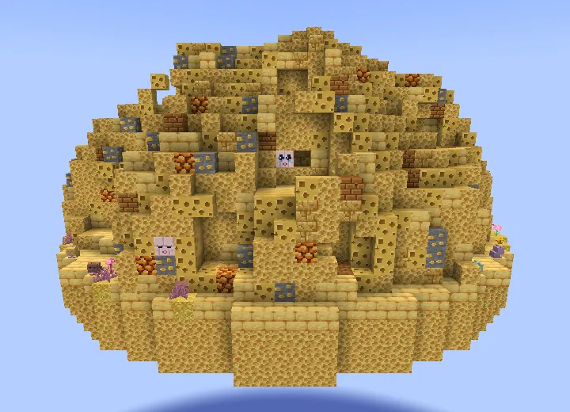
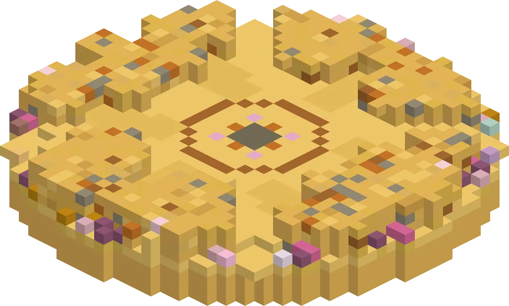
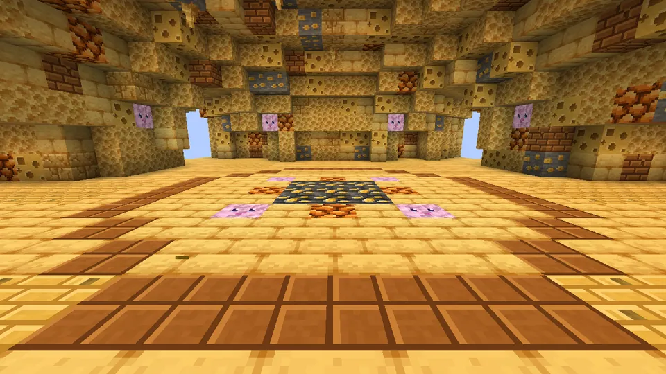
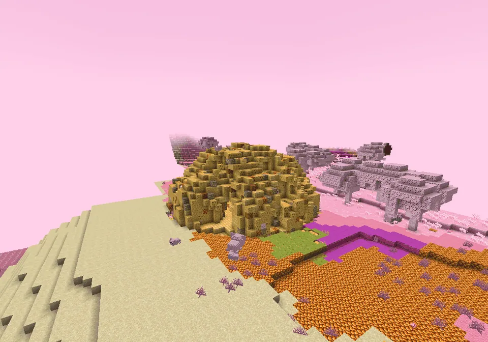
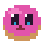
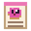
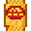
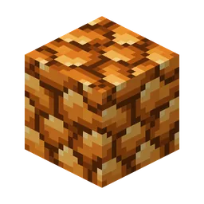
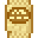

Een kaaskorstheuvel vol gaten... en boze kaasknabbels. Stap op de gouden kern als je durft!
A hill full of holesEen heuvel vol gaten
A rare kaaskorst hill (37 × 37 blocks) full of swiss-cheese holes, with guh faces peeking out on every side, pink flowers round its foot and four tunnels into a round arena. It stands on the land of the Guhmension (not in the Knuffeldal). The superkompas points the way (category Avontuur). The nest belongs to the knabbels: you can't break it ("niet slopen, njeg!").
Een zeldzame kaaskorstheuvel (37 × 37 blokken) vol gatenkaasgaten, met aan elke kant guhgezichtjes die naar buiten kijken, roze bloemen rond de voet en vier tunnels naar een ronde arena. Hij staat op het land van de Guhmensie (niet in het Knuffeldal). Het superkompas wijst de weg (categorie Avontuur). Het nest is van de knabbels: je kunt het niet slopen ("niet slopen, njeg!").
- SizeGrootte
- 37 × 22 × 37
- WhereWaar
- Guhmension landGuhmensie-land
- Superkompas
- Avontuur

In the gameIn het spel
The nest from the south. Look closely: guh faces!
Het nest vanaf het zuiden. Kijk goed: guhgezichtjes!

The arena and the golden kernDe arena en de gouden kern
Inside is a round arena with six little holes in its wall and a golden kern in the middle. Step on the kern if you dare: "De boze kaasknabbels worden wakker! Njeg njeg njeg!" Three waves of boze kaasknabbels come out of the holes: 4, 6 and 8 of them (one more per extra player, at most two more). A knabbel hops at you and pushes a bit. Beaten knabbels show a little floating "zieli..." and drop kaasknabbels.
Binnen is een ronde arena met zes gaatjes in de muur en een gouden kern in het midden. Stap op de kern als je durft: "De boze kaasknabbels worden wakker! Njeg njeg njeg!" Uit de gaten komen drie golven boze kaasknabbels: 4, 6 en 8 (één meer per extra speler, hooguit twee meer). Een knabbel hupt op je af en duwt een beetje. Verslagen knabbels laten een zwevend "zieli..." zien en laten kaasknabbels vallen.

Inside, and the rewardBinnen, en de beloning
When he is beaten, a treasure chest appears on the kern. The first time it holds the Recept: Roze Guh Koek (and knabbels), after that knabbels only. Three days later the knabbels are awake again and you can do the nest once more.
Als hij verslagen is, verschijnt er een schatkist op de kern. De eerste keer zit het Recept: Roze Guh Koek erin (en knabbels), daarna alleen knabbels. Drie dagen later zijn de knabbels weer wakker en kun je het nest nog een keer doen.
The land meets every buildingHet land sluit netjes aan

Kaasknabbel-nest
Snug in the ground.Knus in de grond.
LootBuit
| ItemVoorwerp | CountAantal | ChanceKans |
|---|---|---|
 Roze Guh Koek | 1–6 | oftenvaak |
 Recept: Roze Guh Koek | 1 | oftenvaak |
 Kaas Knabbels | 8–16 | oftenvaak |
| 2–6 | oftenvaak | |
 Blok kaasknabbels | 1–3 | oftenvaak |
 Gouden kaasknabbel | 1 | oftenvaak |